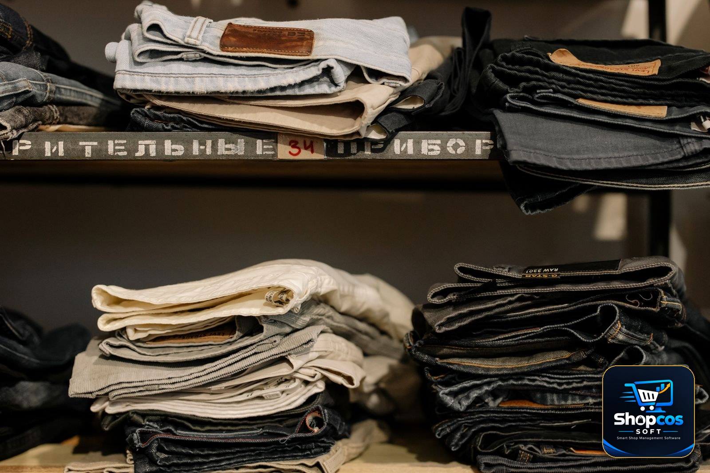

It is the last week before Eid in a ready-made garments shop in Samundri, and the counter has not been empty since morning. A customer holds up a kurta and asks the question every clothing shopkeeper hears fifty times a day: "Bhai, is ka large hai? Aur blue wala dikhayein." The salesman climbs to the shelf, pulls down three pieces, finds the large but not the blue, finds the blue but not the large, and by the time he comes back down the customer has picked up a fourth piece to pass the time — which now also has to be folded again. The sale takes nine minutes. Tomorrow he may be back with the receipt, because the medium is tight on the shoulders — and then the exchange starts: find the original bill, find the replacement, settle the Rs 300 price difference, and write something in a register the next salesman cannot read.
This is why a clothing shop is not a kiryana shop with softer stock. Garments multiply into sizes and colours, they come back over the counter more than any other product in retail, and they expire with the seasons. Billing software built for a grocery counter treats all three facts as edge cases; clothing shop billing software has to treat them as the main job. This guide walks through exactly how — the variant maths, the catalogue setup, barcodes for pieces that arrive without any, an exchange flow that keeps stock and profit honest, and seasonal buying that does not drown you in dead stock.
Why a Clothing Shop Is the Hardest Counter in Retail
A grocer's world is simple in one specific way: a kilo of sugar is a kilo of sugar. One product, one price, one stock count, and when it is sold it almost never comes back. A clothing shopkeeper lives with three complications the grocer never meets, and any software you choose has to survive all three:
- Every design is a family, not an item. A shirt in small, medium, large and extra-large, in white, blue and black, is twelve different stock items that share a name. Customers buy one exact member of that family — if that member is finished, the other eleven do not make the sale.
- Coming back is part of the product. Shoes pinch, kurtas shrink in the first wash, a colour that looked right in shop light looks wrong at home, and a gift is always the wrong size. Returns and exchanges are not rare accidents — they are a daily part of the trade, sometimes a tenth or more of a busy week's sales. A counter that handles them from memory will slowly corrupt its own stock.
- Stock has a season, and seasons end. The lawn that flies off the shelf in May is dead weight by September; jackets bought in October must be gone by February or they sit for eight months eating the cash summer stock needs.
Software that handles variants, exchanges and seasons well is clothing shop billing software. Software that handles only the bill is a calculator with a printer attached.
One Shirt Is Not One Product: The Size-and-Colour Maths
Do the arithmetic most garment shopkeepers have never written down. Take a modest shop — not a big showroom, just a healthy ready-made shop — and count what is actually on its shelves:
| Design | Sizes | Colours | Separate stock items |
|---|---|---|---|
| Men's kurta, one design | S, M, L, XL (4) | White, blue, black (3) | 12 |
| Ladies' 3-piece suit, one print | S, M, L (3) | 4 prints | 12 |
| Kids' frock, one design | 20, 22, 24 … 36 (9) | Pink, red, yellow, green (4) | 36 |
| Men's jeans, one fit | Waist 28–38 (6) | Blue, black, grey (3) | 18 |
Children's clothing is the extreme case — nine sizes is normal, since a frock for a two-year-old and one for a ten-year-old share nothing but the design name. Now give the shop 200 designs at a modest average of 12 variants each, and the real count appears:
The number to remember: 200 designs × an average of 12 size-and-colour combinations = 2,400 separate stock items in a shop that looks, from the door, like it sells "about two hundred things". If your register — or your software — tracks only the 200 design names, then 2,200 of the facts that decide your sales are recorded nowhere. Every "hai ya nahi?" answered from memory is a coin toss against those 2,400 items.
This is where the two classic clothing-shop losses are born. The first is the size hole: medium and large sell out in a fortnight while small and extra-large sit untouched — yet the design's total still shows "plenty left", so nobody reorders, and medium customers are turned away from a shop that looks fully stocked. The second is the colour trap: black sells three times faster than brown, and a reorder placed on the total brings equal numbers of both, deepening the brown pile every time. Neither loss appears in any total. Both appear instantly once stock is tracked per variant — "Kurta design 7, medium, blue: 1 piece left" becomes a fact on a screen, not a feeling. Our guide to stock management for small shops covers general reorder habits; for garments, the variant count is the habit that matters most.

Setting Up Your Catalogue: One Entry per Size and Colour
Here is the honest part, said plainly because it decides everything else: in shopcos soft, as in most practical shop software, a variant is handled as its own product entry. There is no magic "one product with a size grid" — and once you see how garment shops actually work, you stop wanting one. A separate entry per size and colour means every combination carries its own barcode, purchase rate, sale rate, stock count and minimum-stock warning. A kids' size 24 frock costing you Rs 650 and a size 36 costing Rs 900 are genuinely different purchases from your supplier — your records should say so.
A naming rule your whole staff can follow
The entire system stands or falls on one discipline: the name. Use one fixed pattern for every entry — Design – Size – Colour — and never improvise. "Kurta Classic – M – Blue". "Frock Ayesha – 28 – Pink". "Jeans Slim – 32 – Black". The pattern pays you back daily: the salesman types two or three words — "kurta m" — and the billing search narrows straight to the exact variant, instead of a screen of near-identical names. Arrange each shelf stack in the same size order, and the boy you hired last week finds pieces as fast as you do.
The setup weekend: entering 2,400 lines without losing your mind
Shopkeepers hear "two thousand stock lines" and postpone the computer for another year. Do not enter them like a data-entry clerk — enter them like a shopkeeper, in this order:
- Current season first. Enter only what is on this season's shelves. Last winter's leftovers get entered when you bring them out, at clearance rates — half your catalogue anxiety is stock that is not even in the shop right now.
- Design by design, not size by size. Pick up one design, and enter all its variants in one pass while the pieces are in your hands — the rates are the same conversation, the colours are in front of you, and it takes two minutes per design, not twelve trips to the shelf.
- Categories that match your shop floor. Gents, Ladies, Kids at the top; Kurta, Shirt, Suit, Frock, Jeans underneath if you want them. When the season changes, a category view shows you the whole summer or winter position in one look.
- Minimum stock on the fast sizes only. Set the low-stock warning where it matters — medium and large in gents, the middle sizes in kids. A warning on every variant is noise; a warning on the sizes that actually run out is a reorder list writing itself.
A 200-design shop done this way is a single working weekend — and the setup count itself usually finds pieces nobody remembered buying.
Barcodes on Garments: From a 3-Minute Hunt to a 10-Second Bill
Most of what a Pakistani garment shop sells arrives without a barcode — local manufacturers, suits from wholesale markets, loose pieces bought in bundles. So the garment barcode habit is not scanning what the factory gave you; it is printing your own small labels, one per variant, where they survive the shop floor: on the poly bag for folded stock, on a hang-tag for hanging stock, always in the same corner so staff hands learn the spot.
The payoff is bigger than speed — though a scan that bills the exact variant at its exact price in ten seconds, against three minutes of shelf-hunting and register-writing in the Eid rush, is worth having alone. The deeper payoff is accuracy. Without barcodes, three billing mistakes breed in every garment shop:
- The wrong-size entry. The customer bought large; the book says medium was sold. Your stock now shows a large you do not have and lacks a medium you do — and every later swap builds on the lie.
- The wrong-price entry. In children's wear, price rises with size. Billing a size 36 at the size 24 rate — easy to do from memory when both are "the pink frock" — gives away Rs 200–300 on a single piece, several times a week, in the shops that can least afford it.
- The discount-from-thin-air entry. When the price lives in a salesman's memory, so does the discount. On a labelled variant, the price is on the bill — and a discount becomes a decision the owner can see in the day's report instead of a rumour.
Each variant entry holds the barcode you printed for it, so label and stock record are the same fact in two places — scan the bag, and the piece that leaves stock is the piece that was on the shelf. Starting from zero? Our beginner's guide to a barcode system for small shops covers scanners, label printers and realistic costs in rupees.
Exchanges at the Counter: The Moment That Decides Your Profit
Ask a garment shopkeeper what his real daily problem is, and he will not say billing. He will say the customer who comes back — wrong size, a colour the family dislikes, a shalwar an inch short. How your shop handles the next five minutes decides whether exchanges build your name or slowly empty your shelves. The rule that separates the two is simple: an exchange is two transactions, not one favour. The old piece comes back into stock through the returns flow. The new piece leaves through a fresh bill. The difference — in money, in stock, in the customer's khata — is written down in both places, every time.
The clean exchange, step by step
- Find the original bill. Bill number, the WhatsApp bill on the customer's own phone, or a search of his recent bills in the software — a dated bill settles every "last week / last month" discussion before it starts.
- Return the old piece. Enter it as a return against that bill: stock goes up by one, the reason is recorded, and the day's sales and profit correct themselves — returns net out of your reports instead of inflating them.
- Bill the new piece. Scan the replacement like any sale. Its stock goes down by one. If it costs the same, no money moves and the two entries cancel out cleanly.
- Settle the difference openly. Replacement costs more — the customer pays the difference, in cash or onto his khata. Replacement costs less — return it in cash, or hold it as a credit balance on his khata, written where both of you can see it. Never settle it "from memory" — that version costs you money.
Why even a free size swap must be written down
The same-price size swap feels like a non-event — no money moved, so why touch the computer? Because your stock moved: the medium came back, the large left. Unrecorded, your records promise a customer a large you no longer have and hide a medium you could have sold. Repeat that small kindness forty times in the Eid season — a conservative count — and your stock book and your shelves describe two different shops. Every reorder built on those numbers inherits the error. Writing the swap takes under a minute; unravelling a season of unwritten swaps takes a full physical stock count, and usually an argument.
A written exchange policy the software can defend
Decide your policy once, print it on a counter card, and let the bill enforce it: exchanges within a fixed number of days, piece unused with tag and packing intact, bill — paper or WhatsApp copy — shown. A WhatsApp bill cannot be "forgotten at home" and its date cannot be argued with — shops that send bills on WhatsApp find their exchange desk calmer within a month; our guide on how to send a bill on WhatsApp shows the format that works. Shop-soiled returns are a separate decision — take the piece at a marked-down clearance entry if at all, so the loss shows as a decision you made, not stock that quietly vanished.
Seasons: Buying Winter in the Middle of Summer
Clothing is bought backwards. Your winter stock is chosen in the heat of July, your summer lawn arrives while customers are still wearing sweaters, and the two Eids — which move ten days earlier every year — redraw the calendar annually. That rhythm creates the garment trade's most expensive habit: money sleeping in cloth. A design that does not sell this season is not next month's stock; it is next year's — a silent tenant on your shelf, paying no rent, while the cash it swallowed is missing from the season that is actually selling.
Variant-wise records turn season management from a feeling into a short list of facts:
- What is actually left, per design and size. At season's end the question is never "how much winter stock remains?" but "which designs, in which sizes?" Forty leftover jackets in XXL only is a clearance problem; forty spread across all sizes is a carry-over for next year. Identical in a total — opposite decisions.
- Where the holes are. Mid-season, the same report read the other way is your reorder list: designs where medium and large broke early are the ones your area wants, and the reorder that fills only the holes — not a fresh dozen in every size — keeps cash free.
- When to mark down, and by how much. Clearance works when it is early and deliberate: cut the slow colours and extreme sizes while the season still has buyers, rather than finding them in a store-room clean-out two years later. Since each variant carries its own rate, the markdown is one edit — and the bill scans at the new price the same minute.
- What last year taught you. A season of variant records is next year's buying guide: the sizes that broke, the colours that crawled, the design that needed three reorders. Buying from that record — not from the wholesaler's enthusiasm — is the largest profit decision a garment shop makes each year, and the one a memory-based shop makes blind.
How shopcos soft Runs a Clothing Shop
Everything above is shopcos soft used the way garment shops actually use it — no special "clothing module", just the standard tools aimed at the garment trade's three problems:
- Variants as product entries. Every size-and-colour combination is a product with its own barcode, purchase rate, sale rate, stock count and low-stock level — so the screen answers "medium, blue, kitne bache?" with a number, not a shrug. Billing search finds the variant from two or three typed words.
- Barcoded billing. Print labels for the pieces that arrive without them, scan at the counter, and the exact variant leaves stock at its exact rate — including the children's sizes whose prices differ size by size.
- A real returns flow. Returns — including exchanges — are recorded against the original bill: the returned piece goes back into stock, the replacement is billed fresh, the difference settles in cash or on the customer's khata, and returns net out of sales and profit in every report, so a heavy exchange week never inflates your numbers.
- Khata that survives the exchange desk. Difference-on-credit lands on the same ledger as the rest of his udhar, visible in a WhatsApp statement he can check line by line — the discipline our article on whether a khata book app is safe argues every shop should demand.
- Stock housekeeping with reasons. Damaged and shop-soiled pieces leave stock with a recorded reason; sold pieces are archived, not deleted, so last season's history survives this season's clean-out.
- Offline, on your own PC, in your language. Billing continues with no internet, your data stays on your shop's computer with automatic daily backups, and the interface speaks English, Roman Urdu, Urdu and six more languages for the staff you actually employ.
Set it up with this season's stock, run your real counter for a week, and judge it on your busiest evening — the exchange, the size hunt, the difference on khata. That is the test clothing shop billing software has to pass, and it is why we offer a 7-day FREE trial with plans starting at Rs 25,000, one-time. Questions first? Message us on WhatsApp at 0326 4025618 — Urdu mein baat ho jayegi.
The Bottom Line
A clothing shop does not lose its money at the till. It loses it in the gap between what the shelves hold and what the records claim: the medium swapped for a large and never written down, the size 36 billed at the size 24 price, the winter reorder placed on a total that hid that only XXL was left. Close that gap — one entry per size and colour, a barcode on every piece, every exchange written as the two transactions it is — and the same shop quietly keeps thousands of rupees a season that used to leak away.
Start with the maths in this guide and count your own shop honestly: designs × sizes × colours. However big that number is, it is the number of facts your current system is either recording or guessing. If it is guessing, run the quick version of the fix this week — enter this season's twenty best-selling designs, variant by variant, barcode them, and put every exchange through the returns flow. One week of clean records on your fastest stock will tell you more than a year of totals ever did. And when you are ready for the whole shop: the trial is free, the setup takes one weekend, and the counter chaos is optional.
Photo credits: Garments hanging on a rack in a clothing shop photo by MART PRODUCTION · Folded jeans stacked on clothing shop shelves photo by cottonbro studio · Cashier helping a customer pay at a shop counter photo by Andrea Piacquadio — all via Pexels.